Практичні курси · журнал «ДентАрт» 2022 №3
Приклад відновлення бічних зубів композитами сімейства Neo Spectra ST
The case of restoration of posterior teeth with composites of the Neo Spectra ST family
Прагнення виробників до вдосконалення у технологіях розробки нових стоматологічних матеріалів дозволяє лікареві-стоматологу розширювати можливості застосування композитів та підвищувати якість своїх реставрацій. Вибір композитних матеріалів для естетичної і функціональної реабілітації бічних зубів найчастіше ґрунтується на їх адгезивних властивостях, можливості зміцнення зуба і досягнення природного зовнішнього вигляду.
Початкова клінічна ситуація
Пацієнтка Н. звернулася в клініку з метою планової санації для заміни старих пломб у боковій ділянці нижньої щелепи праворуч. Було визначене основне завдання – відновити жувальну ефективність і провести ревізію старих конструкцій, які відслужили свій термін – 10 років.
Зуби 47 і 46 раніше лікувалися, тут спостерігається розгерметизація реставрації, що проявляється у вигляді пігментації по зоні крайового прилягання. Архітектура жувальної поверхні зубів 47, 46 порушена, отже, порушена функціональність цих зубів.
Діагностика і планування відновлення
Попередньо зроблена рентгенологічна діагностика, 3D знімки виявили приховані проблеми: зуб 47 має неспроможний контактний пункт з краєм пломби, що нависає, на рівні ясен з мезіального боку. Зуб 46 раніше був лікований ендодонтично, і герметизм системи кореневих каналів був під питанням, також у мезіально-щічному кореневому каналі, ймовірно, є фрагмент зламаного інструмента.
У зубі 45 виявлено прихований каріозний процес на мезіальній проксимальній поверхні. І якщо при виборі методу відновлення зубів 47 і 45 не було сумнівів у прямій техніці, такі реставрації довговічні і передбачувані, то для реставрації девітального зуба 46 після переліковування системи кореневих каналів було запропоновано кілька варіантів: пряма реставрація, вкладка або коронка. Зваживши всі ризики і можливі ускладнення, обрали метод прямої реставрації з армованою скловолоконною вкладкою. Після препарування та видалення старих пломб і каріозних уражень зроблено реєстрацію оклюзійних контактів артикуляційним папером Бауш завтовшки 200 мкм.
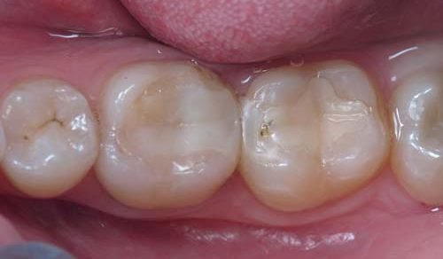
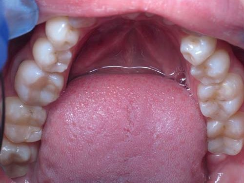
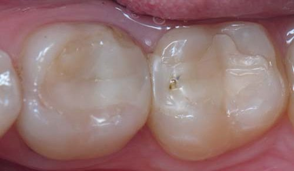
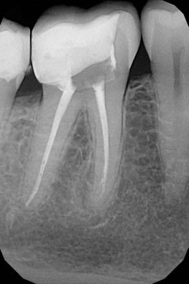
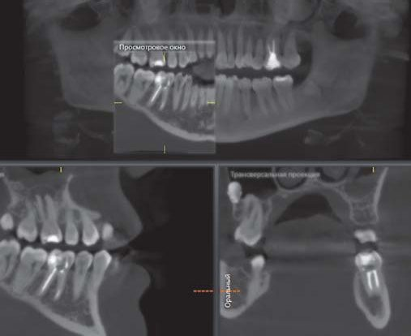
Реставрація зуба 47
Обсяг препарування поширюється на мезіально-оклюзійну поверхню з порушенням медіального крайового гребеня – класичний Клас II. У довготерміновості функціонування будь-якої реставрації провідну роль відіграє адгезивне з’єднання, у цьому випадку як адгезивна система була застосована система Prime&Bond universal (Dentsply Sirona). На вибір матеріалу реставрації впливає велика кількість факторів: міцність композиту, зручність роботи з ним, його зносостійкість і естетичність, модельованість і легкість адаптації до зубних тканин. При реставрації бічних зубів вибір колірної конструкції значно спрощується. Потрібно точно визначити відтінок тіла зуба, він буде відповідати відтінку основної емалі, у цьому випадку А2; як дентинний шар обрано відтінок А3,5, що відповідає відтінку дентинного шару бічного зуба. Реставрація виконується у біоміметичній концепції з урахуванням топографії втрачених чи відсутніх тканин.
Головна клінічна проблема в об’ємних порожнинах полягає у виникненні полімеризаційної напруги в композиті внаслідок усадки. Використання текучого композиту SDR Plus, відтінок А3 (Dentsply Sirona) як гідрофобного покриття та замінника дентину зменшує полімеризаційну напругу в конструкції реставрованого зуба.
Як основний матеріал для відновлення шару дентину обрано нанокерамічний композит низької в’язкості відтінку А3,5 Neo Spectra ST LV (Dentsply Sirona), ця версія має м’якшу консистенцію, зручну для адаптації до стінок порожнини.
Для відновлення шару емалі обрано композит високої в’язкості відтінку А2 Neo Spectra ST НV (Dentsply Sirona), бо ця версія має чудові маніпуляційні характеристики, дає можливість швидкого та простого полірування, а також виражений блиск, що важливо для емалевого шару.
Обидві версії – і LV, і HV – мають однакові властивості щодо естетики, полірування, характеристик міцності, кольоропередачі, довговічності. Різниця тільки в консистенції, яка зроблена для зручності роботи, залежно від особистих уподобань.
Для виконання анатомічно правильної форми контактної стінки використовували аксесуари системи Palodent V3 (Dentsply Sirona). Після доадгезивної підготовки послідовно встановлені контурна матриця (5,5 мм), клин та сепараційне кільце.
При адгезивній підготовці використано техніку селективного протравлювання. Після 20-секундної експозиції тільки на емалі 36 % ортофосфорної кислоти кислотний агент видаляється великим об’ємом води, тканини пасивно висушуються і далі – етап внесення адгезивної системи Prime&Bond universal (Dentsply Sirona) та протравлювання поверхні дентину протягом 30 секунд. Полімеризація адгезивної плівки провадиться після видалення розчинника протягом 10 секунд.
Першим шаром на дно підготовленої порожнини вноситься SDR Plus А3, рекомендована тривалість полімеризації цього шару – 20 секунд.
Наступний крок – відновлення мезіальної проксимальної поверхні однією порцією матеріалу високої в’язкості Neo Spectra ST НV (Dentsply Sirona) відтінку А2. Товщина стінки не повинна бути більшою 1 мм, крайовий валик анатомічно оформлений інструментально, з послідовною полімеризацією цієї порції матеріалу протягом 20 секунд, після чого можна прибрати кільце сепарації і матрицю для зручності подальшого заповнення середини порожнини.
Розподіливши порожнину зуба на опорну (щічну) і спрямовуючу (язичну) зони, покроково заповнюємо шар дентину композитом низької в’язкості Neo Spectra ST LV (Dentsply Sirona) відтінку А3,5, а шар емалі – композитом високої в’язкості Spectra ST НV (Dentsply Sirona) відтінку А2 у межах кожного горбика.
Кожна порція полімеризується протягом 20 секунд, і після інструментального оформлення остаточного дизайну оклюзійної поверхні моляра робиться характеризація основної фісури ефект-фарбою по текучому композиту, надлишки якого видаляються мікробрашем. Фінішна полімеризація рекомендується із застосуванням ейр-блока гліцерином протягом 40 секунд. Після завершення реставрації зробили попередню фінішну обробку контактної та оклюзійної поверхонь абразивними шліфувальними і полірувальними формами системи Enhance, а також опрацювання штрипсами проксимальної зони біля ясен.
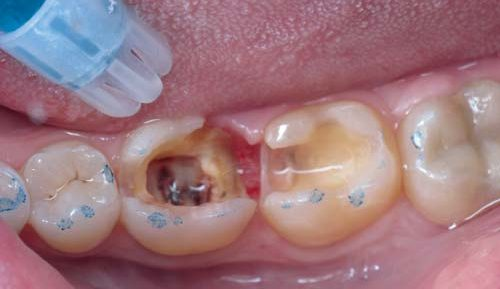
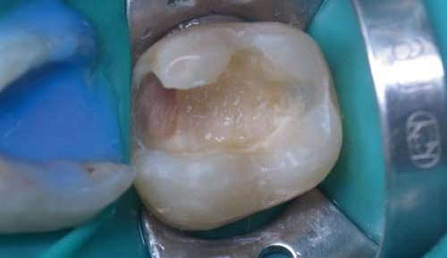
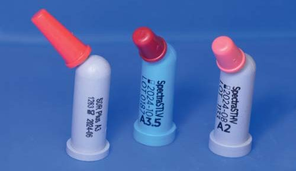
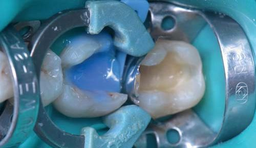
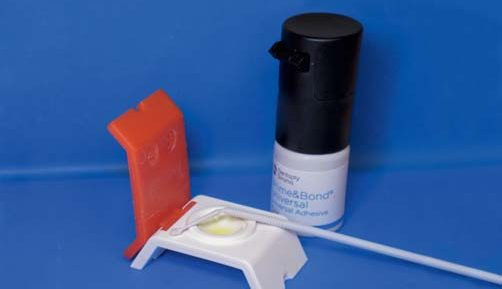
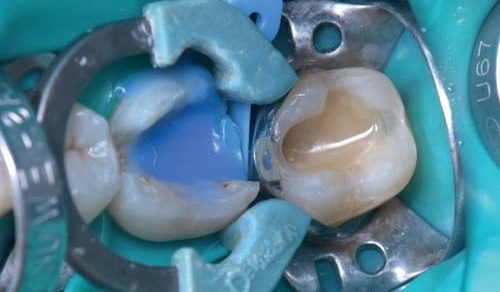
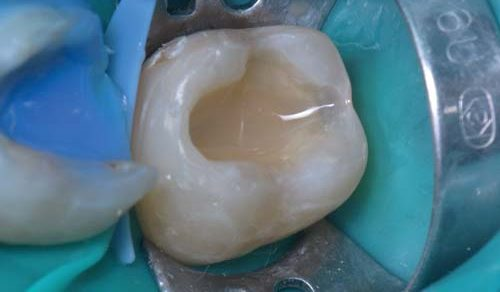
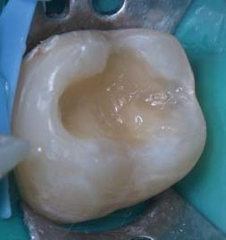
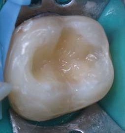
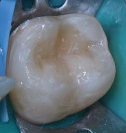
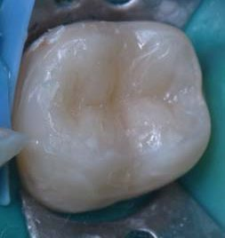
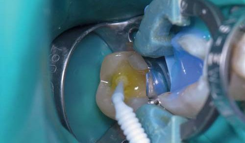
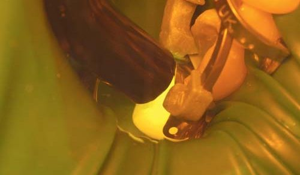
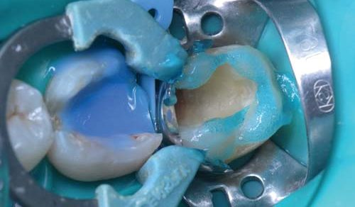
Реставрація зуба 45
Одна з причин появи подібних порожнин полягає в незадовільній гігієні ротової порожнини, зокрема нехтуванні очищенням контактних поверхонь зубною ниткою.
Своєчасна діагностика каріозного ураження Класу II дуже важлива, тому що локалізація і довжина порожнини впливають не тільки на доступ при препаруванні, але й на об’єм висічення тканин зуба.
З появою адгезивних технологій є можливість застосування мінімально інвазивних способів одонтопрепарування, в основі яких лежать принципи біологічної доцільності. Тут ми маємо дефект на дистальній проксимальній поверхні зуба зі збереженням крайового валика і без залучення оклюзійної зони.
Оскільки проксимальна стінка сусіднього зуба 46 поки що не відновлена, є можливість виконати реставрацію в техніці «вільної руки», без застосування матриці, пакованим матеріалом, але при цьому можуть виникнути складнощі у формуванні опуклої форми дистальної поверхні та адаптації матеріалу в невелику порожнину з незручною локалізацією. Вирішили використати прозору лавсанову матрицю, відконтуровану на «хвилі» (можна на будь-якому іншому опуклому інструменті), яку в приясенній зоні зафіксували клином.
Після адгезивної підготовки виконано реставрацію в одношаровій техніці матеріалом Neo Spectra ST flow (Dentsply Sirona). Він рекомендований для заповнення малих порожнин у зонах невеликих жувальних навантажень, його зручно вносити у важкодоступні порожнини прямо з канюлі, і дуже важливо, що цей матеріал чудово адаптується і добре полірується, а це унікальна характеристика для текучих композитів.
Після внесення та розподілу матеріалу було встановлено сепараційне кільце Palodent V3 (Dentsply Sirona) для активного притискання матричної смужки і конденсації матеріалу до стінок зуба. Полімеризували текучий композит протягом 40 секунд, після чого можна братися до фінішної обробки та полірування поверхні реставрації.
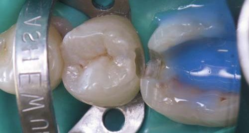
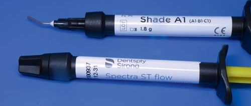
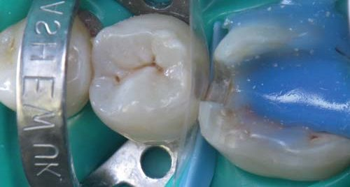
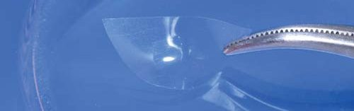
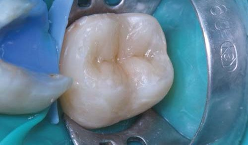
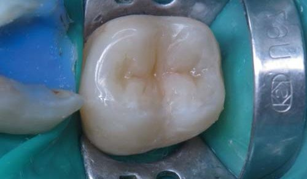
Реставрація зуба 46
Наявність фрагмента інструмента в кореневому каналі – досить поширена ситуація. Виявити його найчастіше можна цілком випадково під час рентгенологічного дослідження. І якщо раніше вилучення уламка інструмента було практично нерозв’язним завданням, за яке бралися одиниці фахівців, то сьогодні сучасне обладнання, знання та навички лікарів дозволяють вирішувати навіть найскладніші завдання в ендодонтії.
Після препарування і створення доступу до усть кореневих каналів уламок вилучено за допомогою ультразвуку під обов’язковим візуальним контролем процесу втручання з використанням мікроскопа.
Тільки при певному збільшенні та освітленні можна було побачити частину відламаного фрагмента інструмента, і через дві години оперативних маніпуляцій фрагменти інструмента стали рухомими і були вилучені з мезіально-щічного кореневого каналу. Далі – розпломбування та інструментальна обробка кореневих каналів з подальшим формуванням системою ProTaper Next (Dentsply Sirona) під контролем ендометричного вимірювання робочої довжини апекслокатором та її рентгенологічного підтвердження.
Етап іригації розчинами гіпохлориту натрію та лимонної кислоти з ендоактивацією проведено за протоколом Джузеппе Контаторе.
Насамкінець кореневі канали були обтуровані термопластифікованою гутаперчею Thermafil (Dentsply Sirona) із силером AH Plus (Dentsply Sirona). Пластикові носії були зрізані борами TermaCut, порожнина очищена від залишків гутаперчі та силера ультразвуковим скейлером і спиртом.
Після ендодонтичного втручання під час цього ж відвідування з метою відновлення герметизму системи кореневих каналів зроблені тотальне кислотне протравлювання дентину й емалі та адгезивна підготовка тканин системою Prime&Bond universal (Dentsply Sirona), устя кореневих каналів герметизовані SDR Plus.
Для збільшення міцності і стійкості до деформацій в цілому реставраційної конструкції ендодонтично лікованого бічного зуба у цьому клінічному випадку було застосовано скловолоконне армування дна і стінок порожнини зуба матеріалом EverX Posterior (GC), що знижує полімеризаційну напругу і має підвищені характеристики міцності.
У початковому варіанті підготовлена порожнина має вигляд довільного дефекту, який згідно з універсальним алгоритмом відновлення бічних зубів слід перевести в дефект Класу II. В анатомічних параметрах було відновлено вестибулярну та оральну стінки коронки матеріалом низької в’язкості Neo Spectra ST LV (Dentsply Sirona), відтінок А3,5, та високої в’язкості Neo Spectra ST НV (Dentsply Sirona), відтінок А2, у двошаровій техніці.
Наступним етапом послідовно відновлено дистальну та медіальну проксимальні контактні поверхні з використанням матричної системи Palodent V3 (Dentsply Sirona) і композиту високої в’язкості Neo Spectra ST НV (Dentsply Sirona), відтінок А2, таким чином дефект переведено у Клас I.
Середину заповнюємо, адаптуючи та поетапно полімеризуючи по 20 секунд кожну порцію матеріалу в межах кожного окремого горбика. Для шару дентину використовуємо композит низької в’язкості Neo Spectra ST LV (Dentsply Sirona) відтінку А3,5, для шару емалі – композит високої в’язкості Neo Spectra ST НV (Dentsply Sirona) відтінку А2.
Послідовна полімеризація окремих невеликих порцій матеріалу, кожна з яких адаптована до однієї поверхні порожнини, зменшує напругу полімеризації всієї конструкції.
Для індивідуалізації реставрації зроблено характеризацію фісур. Контрольний рентгенівський знімок на додаток до стандартних рентгенівських знімків за протоколом ендодонтичного втручання робиться з метою контролю за заповненням коронки реставраційними матеріалами та крайовим приляганням реставрації до тканин зуба на контактній поверхні.
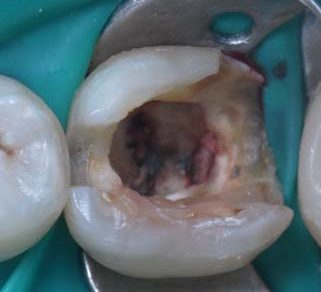
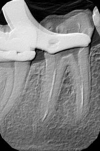
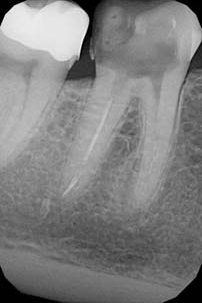
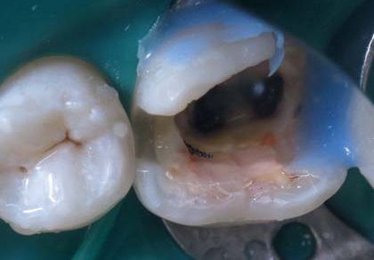
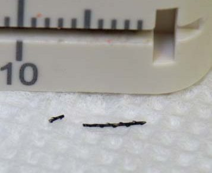
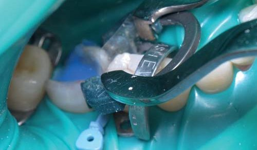
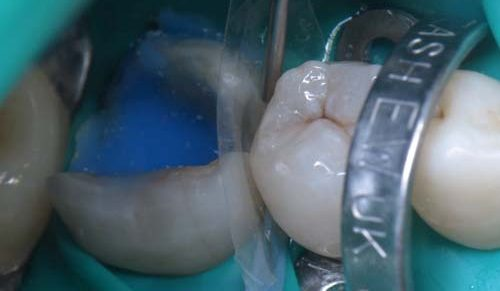
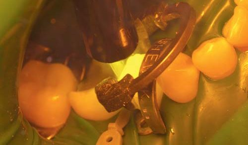
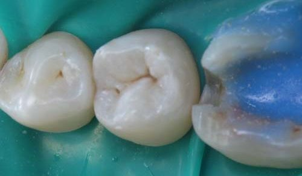
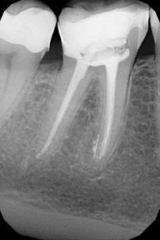
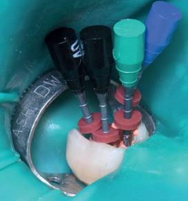
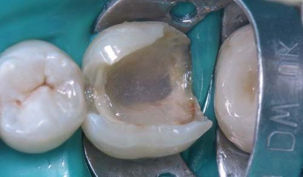
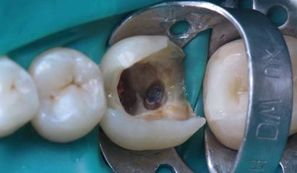
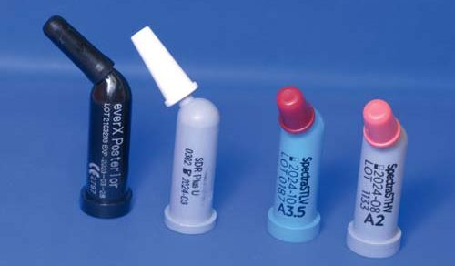
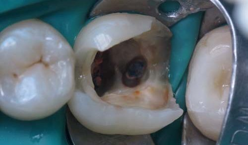
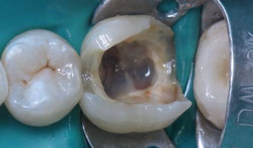
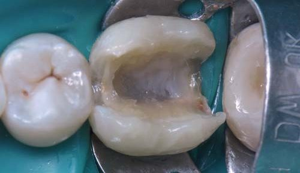
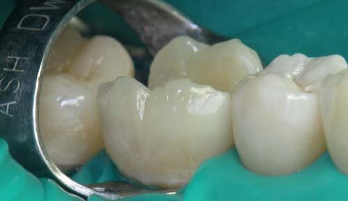
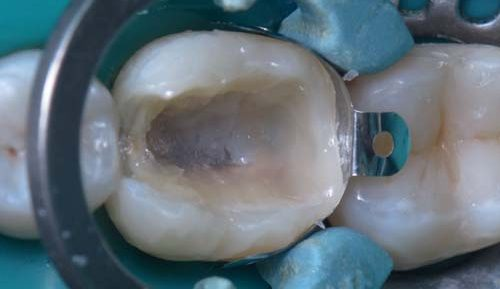
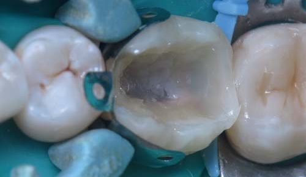
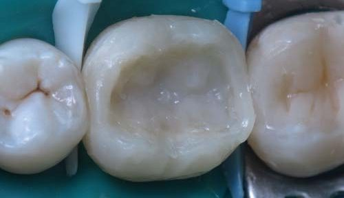
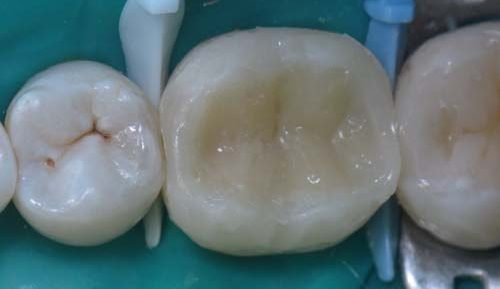
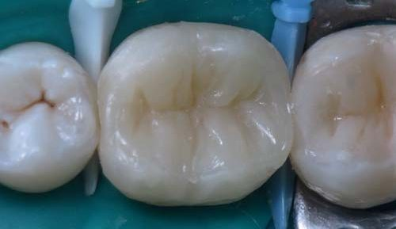
Фінішна обробка
Після закінчення реставрації зроблено її оклюзійну інтеграцію та полірування. Фінішна обробка відіграє вирішальну роль у підтримці необхідної герметизації країв та крайової інтеграції. Вона була виконана системою Enhance mini (Dentsply Sirona) – форми конус та порожнистий конус. Систему застосовують для досягнення передполірувального блиску поверхні реставрації, видалення надлишків та контурування форми. Полірування було завершене за допомогою системи Enhance PoGo (Dentsply Sirona).
Основна мета фінішної обробки – отримати реставрацію з гарним контуром, оклюзійною поверхнею, природними формами амбразур та глянсовою поверхнею. Природна анатомія та остаточна крайова інтеграція демонструють успіх виконаної роботи.
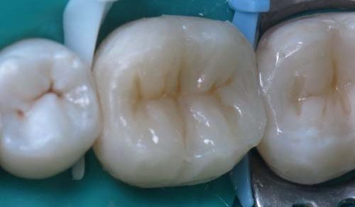
Після реставрації
Фінальні фотографії віддаленого результату роботи через 3 місяці. Після функціональної адаптації на відновлених оклюзійних поверхнях сколів, стирань та «білих ліній» не виявлено, глянець збережений. Глянсова поверхня реставрації не тільки дозволяє краще імітувати оптичні властивості твердих тканин зуба, а й перешкоджає ретенції зубного нальоту та харчових пігментів.
У цьому клінічному випадку була створена функціональна, біосумісна, механічно стабільна й естетична реставрація зубів швидким та ефективним способом.

Висновки
Застосування прямої техніки реставрації як у найпростіших, малоінвазивних варіантах виконання, так і в складніших за рівнем та обсягом відновлення ефективне лише за умови дотримання адгезивних протоколів. Нині в арсеналі лікаря-стоматолога безліч нових технік і матеріалів, що дозволяють виконати навіть найскладніші завдання. Головне з них як для лікаря, так і для пацієнта – функціональна й естетична реабілітація.
Завдяки інноваційним технологіям, композиту сімейства Neo Spectra ST з поліпшеними характеристиками механічної міцності, стійкості до стирання, цілісності крайового прилягання, глянсової якості поверхні і стабільності кольору, з ідеальною модельованістю і скульптурикою значно спрощується, прискорюється і полегшується виконання цих основних завдань. Головне – стежити за новинками і не боятися застосовувати їх у своїй практиці.
Література
- Радлинский С. Реставрация боковых зубов: стратегия и принципы // ДентАрт. – 1999. – № 4. – С. 22–29.
- Dentsply Sirona. Научный компендиум Neo Spectra ST, 2021.
- Vallittu P. K. A review of fiber-reinforced denture base resins // J Prosthet Dent. 1996;5:270–6.
- Пономаренко О. Стекловолоконное армирование прямых реставраций // ДентАрт. – 2015. – № 3. – С. 20–29.
- Вальтер Діас, Андре Рейс. Методи та інструменти для фінішної обробки і полірування композитних реставрацій // ДентАрт. – 2021. – № 3. – С. 6–11.